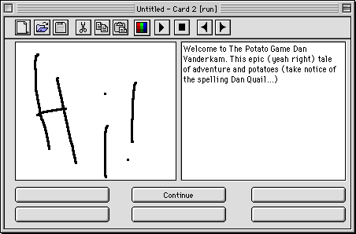
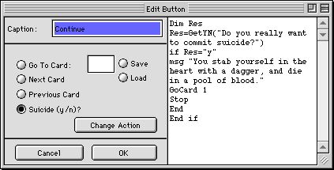

The Adventure Maker is a card-based game maker. It isn't finished yet,
but you can download a beta version.
The Adventure Maker allows you to draw a picture, write some text,
and define up to six buttons on every card. These buttons can do practically anything,
thanks to LingoScript, a scripting language by me.
The program comes with an example, Read Me, and the program.
| The Adventure Maker | 300K |

A sample Card. Note that the card substitutes in a name that it asked for
on the previous card (Dan Vanderkam).

The Button editor. As you can see, it mixes power and ease of use.